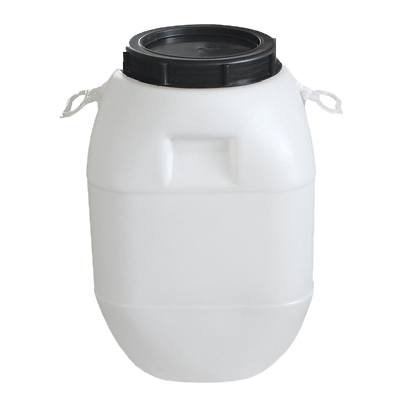

Pálenica Brestov
Ako pripraviť kvalitný kvas?
Základom kvalitného destilátu je príprava kvasu. Z nekvalitného kvasu ani ten najlepší destilačný prístroj nevyrobí lahodný destilát. Na prípravu kvasov používajte výhradne dozreté až prezreté ovocie bez listov, trávy, hliny, kameňov, konárov, hniloby a plesní. Nedozreté ovocie obsahuje málo aromatických látok a cukru. Preto je destilát nevýrazný bez arómy a výťažnosť je veľmi malá. Nahnité ovocie obsahuje baktérie a plesne. Takéto ovocie ma málo cukru a takmer vôbec nekvasí.
Ovocie plníme do nerezových alebo plastových potravinárskych nádob s označením HDPE, najlepšie o objeme od 100 - 250 l. Nikdy nepoužívajte nádoby od farieb, malty, lepidiel a iných chemických látok, taktiež, ani sudy na dažďovú vodu. To všetko ovplyvňuje kvalitu a chuť výsledného destilátu. Nádoby plníme do 4/5 cca na 80% objemu. Najlepšie naraz alebo v rozmedzí 1 - 3 dni. Marhule,slivky višne, čerešne, broskyne a podobne je potrebné odkôstkovať, pretože kôstky obsahujú jedy, hlavne kyanovodík. Jablká, hrušky, dule sa musia dokonale zomlieť, najlepšie na kašu. Čím jemnejšie, tým lepšie nám to vykvasí. Do suda v objeme 120 l dolejeme 10 - 15 l kvalitnej pitnej vody a poriadne premiešame, aby sa z ovocia vytlačil vzduch a do vody vyplavil cukor, ktorý je potrebný pri kvasení.
Pridávanie cukru do kvasu je kapitola sama o sebe. Skúsený páleničiari doporučujú pridať 1 kg cukru rozpusteného v 2 - 3 l vlažnej vody na 100 l kvasu pre rýchlejšie naštartovanie kvasného procesu. Podľa potreby môžeme pridať kvasinky a potrebné enzýmy (najmä u jesenných odrôd ovocia). Najpouživanešie sú produkty od firmy Erbslöh - kvasinky spiriferm, spiriferm arom, oenoferm freddo cca 20 - 30 g na 100 l kvasu a pektonický enzým distizym fm cca 25 - 35 ml na 100 l kvasu. Kvas pred uzavretím premiešame. Potom už doňho nezasahujeme. Kvasné nádoby hermeticky uzavrieme vekom a na vrch umiestnime kvasnú zátku. Umiestnime ich do čistých a vzdušných miestností so stálou teplotou, ktorá by nemala vystúpiť nad 25 ̊C. Ideálna teplota kvasenia je 16 ̊C až 20 ̊C. Najkvalitnejšie destiláty sa získavajú z kvasov pripravovaných pri teplotách 16 ̊C až 18 ̊C. Pri vysokých teplotách nad 25 ̊C kvasinky hynú, rozvíjajú sa octové baktérie a vyparuje sa alkohol. Pri nízkych teplotách prebieha kvasenie veľmi pomaly, alebo sa úplne zastaví.
Ukončenie kvasenia nastáva vtedy, keď sa už netvorí CO2 a koláč sa začína prepadávať do kvasu. Po dokvasení je dobré dať kvas do chladnejšej miestnosti a čím skôr destilovať, pretože dlhým státím rastie strata obsahu alkoholu a nebezpečenstvo octového kvasenia.
Pridať alebo nepridať cukor?
O tom či pridať cukor do kvasu alebo nie pojednáva článok, ktorý publikoval Ing. Július Forshoffer, PhD., popredný odborník v oblasti liehovarníctva a paleníc:
Otázka je dôležitá i jednoznačná, ale nie je možné dať na ňu jednoduchú odpoveď typu áno-nie. Pokúsim sa o vysvetlenie zo širšieho pohľadu.
Obsah cukru v kvase (teda v pôvodnej surovine) je rozhodujúci pre to, koľko alkoholu sa v kvase behom fermentácie vytvorí, a teda v prenesenom zmysle slova, koľko pri destilácii “potečie”. Lenže množstvo alkoholu v kvase nie je iba o vydestilovanom objeme. Alkohol v kvase ma aj dôležitú funkciu pre rozpúšťanie (extrakciu) a „vynášanie“ vonných a chuťových látok, ktoré sa pri destilácii dostávajú do produktu a dávajú mu charakteristické vôňové a chuťové vlastnosti. Ak je v kvase alkoholu málo môže dôjsť nielen k zníženiu senzorických vlastností destilátu, čo sa prejaví mdlou vôňou či chuťou produktu. Okrem toho nízky obsah alkoholu v kvase ho menej “chráni” pred možnou infekciou a zoctovatením. Zoctovatenie kvasu sa vyskytuje často a signalizuje, že pestovateľ podcenil proces jeho prípravy a riskuje, že vypálený produkt nebude zodpovedať očakávaniam.
Obsah cukru v kvase.
Z toho vyplýva, že v kvase má byt zaručený určitý obsah cukru, najjednoduchšie tým, že sa použije dobre vyzreté ovocie, ktoré nesie v sebe dostatočné množstvo cukru a jeho skvasením sa vytvorí aspoň 6-8 % alkoholu v kvase. Na druhej strane ak “umelo” zvýšime obsah alkoholu v kvase, či už pridaním vyššieho množstva cukru alebo aj doliehovaním, vzniká rovnaký stav ako keby sme dobrý destilát riedili vodkou.
Dva pohľady komisie EÚ.
Tejto skutočnosti sa pridržala aj komisia Európskej únie, ktorá vydala Smernicu ES 110/2008, v ktorej sa uvádza, že skutočne pravý, kvalitný, ovocný destilát má byť vyrobený bez prídavku cukru alebo liehu pri kvasení. Lenže teória je teória a prax býva niekedy odlišná. Tí, ktorí vyrábajú víno vedia, že tá istá komisia EÚ povolila prisladiť hroznové mušty cukrom vtedy, keď klimatické podmienky nedovolili dosiahnuť potrebnú cukornatosť hrozna. Takže pri výrobe hroznových a vínnych destilátov (i terkelice) je prisladenie (v odôvodnených prípadoch) povolené. Nuž, tu vidíme dva rôzne pohľady a prístupy na jeden problém. A to som sa ešte nedotkol slovenskej legislatívy, ktorá pre destiláty z pestovateľského pálenia zakazuje komercializáciu ich predajom. Pestovateľ si takpovediac vlastne vyrába destilát pre seba a mal by si byť vedomý toho, že nadmerným prídavkom cukru do kvasu vlastne znižuje kvalitu destilátu. Lenže, ak to robí pre seba je to jeho voľba, hoci vo všeobecnosti to môžeme považovať za určitú formu porušenia technologickej disciplíny.
Destilátové liehovary.
Iná situácia je v destilátových liehovaroch a priemyselnej výrobe liehovín, kde také “zrieďovanie” destilátu prídavkom cukru alebo liehu do kvasu (zložkami, ktoré sú lacnejšie ako vstupná surovina – ovocie) môže spotrebiteľ, ktorý si produkt kupuje, vnímať ako vedomé porušovanie (znižovanie) kvality s cieľom zvýšenia miery zisku. Takže na záver iba apelácia na samotných pestovateľov, aby sa vo vlastnom záujme snažili o dosiahnutie najvyššej kvality destilátov (veď je to aj ich vizitka, nielen páleničiara) a obmedzili na minimum prípadné korekcie obsahu cukru v kvase, predovšetkým využívaním najlepšej suroviny a správnou prípravou kvasu pred destiláciou. A rovnako poučenie pre spotrebiteľov, aby sa naučili rozlišovať to, čo konzumujú.